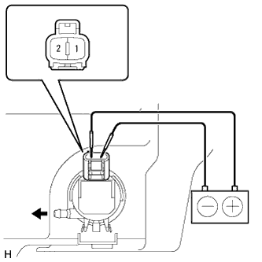

ЭЛЕКТРОДВИГАТЕЛЬ НАСОСА СТЕКЛООМЫВАТЕЛЯ (заднего) > ПРОВЕРКА |
| 1. ПРОВЕРЬТЕ ЭЛЕКТРОДВИГАТЕЛЬ И НАСОС СТЕКЛООМЫВАТЕЛЯ ВЕТРОВОГО СТЕКЛА В СБОРЕ |
Снимите бачок омывателя.
Отсоедините разъем электродвигателя и насоса заднего стеклоомывателя.
Заполните бачок омывателя омывающей жидкостью.
|  |
Подсоедините положительный (+) вывод аккумуляторной батареи к контакту 1 электродвигателя и насоса заднего стеклоомывателя, а отрицательный (-) вывод – к контакту 2.
Убедитесь, что жидкость для стеклоомывателя вытекает из бачка омывателя.